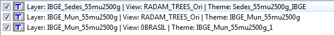

TerraLib 4.x Converter is a tool used to convert data to TerraLib 5 model. It only supports TerraLib databases generated by TerraView 4.2.2. If the selected database is from a previous version, a warning message will appear. In this case, firstly install TerraView 4.2.2 and then open the database to perform the conversion to 4.2.2, then try to use this tool again.
It is accessible through:
Tools > TerraLib4 Converter...
This tool follows a wizard standard in 7 steps to assist the conversion:
- Connect to a TerraLib4 Database (it is the same interface used to connect with a database in TerraLib4.x).
- The operation will be always Connect.
- Select the Database Type (Access). It is only implemented for Access.
- Inform the connection parameters (Host, Port, User, Password) if the database type is not Access)
- Select the Database... on version 4.2.2
- Press Next
- If the warning message "The database must be converted to the model 4.2.2" occur - press OK
- Press Cancel.
- Open this database under TerraView 4.2.2 to convert it to this version and them come back here.
- Layer Selection - Select the Layers that will be converted to TerraLib 5.
- Under Layers List it is possible to Select All or Deselect All.
- Select All or at least one of them by checking the box.
- Press Next.
- Target Data Source - Select a data source to store the converted data (Data Source Selector).
- Select one of the Available Data Sources from the list (or create a new one).
- Press Next.
- Target Raster Folder - This step is necessary only when there is at least one raster layer to be converted. Select a folder to store the raster layers as TIFF files.
- Click on
 to define where to store the raster layers as TIFF files.
to define where to store the raster layers as TIFF files. - Press Next.
- Resolve/No Name Conflicts - Some layer name might crash with layer names in the target data source. For those marked with it is necessary to change. The others can also have its names changed.
- Double-Click over the Target Name cell and enter the new name for all layers marked.
- Press Commit. After this step all layers are already available at the the target Data Source.
- Layer Creation - Select which Terralib4.x layers converted will be part of your current project in TerraLib5.
- Select All or some of them by checking the box to create a corresponding layer at your project.
- If Deselect All is chosen, the layers can be added afterwards as they are available at the target datasource.
- Press Next.
- Theme Creation - Select which Terralib4.x Themes of converted Layers will be a layer in your current project in Terralib5, with information like Visual and Grouping. Check the hint bellow before selection.
- Select All or some of them by checking the box.
- If Deselect All is chosen, the Themes will not be represented in your current project.
- Press Finish.
In the table, the same input layer "IBGE_Mun_55mu2500g" would generate three layers in your current project if the two last lines were checked. One for each view (RADAM_TREES_Ori and 0BRASIL) and one for the original layer selected at the step 6. These may cause more than 1 layer with the same name. Also if a layer from a view is selected, the visual caracteristics (color) are used to define the style.
